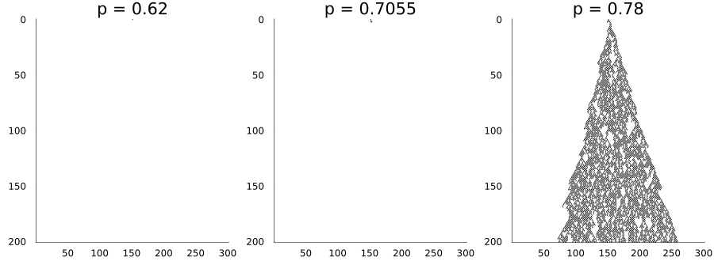
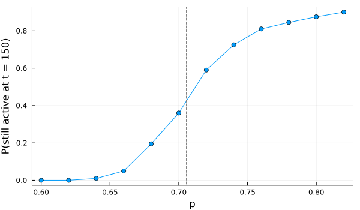
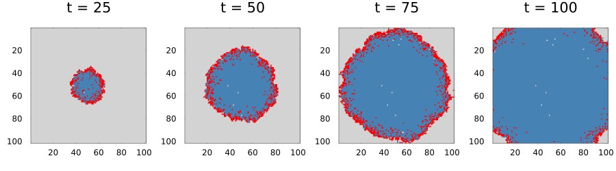
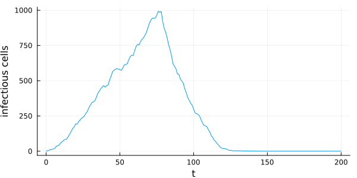
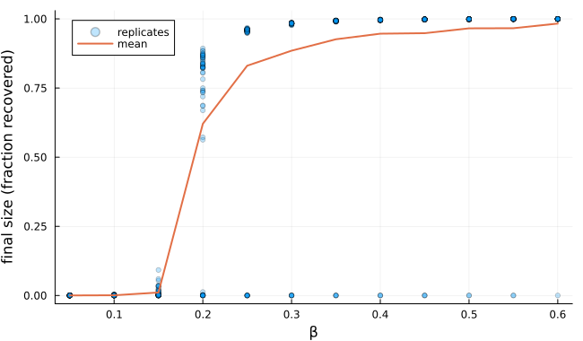

Stochastic rules and ensembles
Simon Frost
- Overview
- Counter-based random numbers
- Directed percolation
- A lattice SIR epidemic
- Reproducibility
- References
Overview
Most ecological cellular automata are stochastic: infection, dispersal and death happen with probabilities. This vignette covers how random numbers work in CellularAutomataCore.jl, why the same model gives the same answer however it is run, and how to run and summarise ensembles of replicates with the SciML ensemble interface.
ENV["GKSwstype"] = "100"
using CellularAutomataCore
using Plots
using Random
using StatisticsCounter-based random numbers
A rule draws random numbers from its context: uniform(ctx, k) is a number in $[0, 1)$ and bernoulli(ctx, p, k) is true with probability p. The draw is a pure function of four things, hashed by the Philox4x32-10 generator (Salmon et al. 2011):
- the problem’s
seed, - the cell,
- the time step,
- the draw number
k.
Nothing depends on the order in which cells are visited, so the result is the same on one thread or many, on the CPU or a GPU, with dense or sparse storage. Different k give independent numbers; the same k gives the same number, so a rule should number its independent events 1, 2, …. (Draw 0 is reserved for the update schemes.)
ctx = CellContext(nothing, CartesianIndex(3, 4), 10, 42, 2026)
uniform(ctx, 1), uniform(ctx, 1), uniform(ctx, 2)(0.038246647972453474, 0.038246647972453474, 0.403975113636703)Directed percolation
The Domany–Kinzel automaton is the simplest model of an epidemic in one dimension. A cell becomes (or stays) active with probability $p$ if at least one of its two neighbours was active, and is otherwise inactive. Activity either dies out or spreads forever, with a sharp transition near $p_c \approx 0.7055$, the critical point of directed site percolation.
domany_kinzel = LocalRule(Moore(1)) do cell, nbrs, ctx
any(==(1), nbrs) && bernoulli(ctx, ctx.p.p) ? one(cell) : zero(cell)
end
panels = map((0.62, 0.7055, 0.78)) do p
sol = solve(CAProblem(domany_kinzel, single_seed(301), 200, (p=p,); seed=3))
plot(sol; c=:binary, colorbar=false, title="p = $p", xlabel="", ylabel="")
end
plot(panels...; layout=(1, 3), size=(900, 330))
The survival probability, the fraction of runs still active after T steps, shows the transition. An EnsembleProblem built on a CAProblem gives trajectory i the seed prob.seed + i, so replicates differ; output_func reduces each run to a number, and EnsembleThreads() spreads the replicates over the threads.
function survival(p; T=150, n=200)
prob = CAProblem(domany_kinzel, single_seed(401), T, (p=p,))
ens = EnsembleProblem(prob; output_func=(sol, ctx) -> (any(==(1), final_state(sol)), false))
sim = solve(ens, Synchronous(), EnsembleThreads(); trajectories=n, save_everystep=false,
backend=ArrayBackend(threaded=false))
return mean(sim.u)
end
ps = 0.60:0.02:0.82
plot(ps, survival.(ps); marker=:circle, xlabel="p", ylabel="P(still active at t = 150)",
legend=false, size=(600, 350))
vline!([0.7055]; linestyle=:dash, color=:grey)
A lattice SIR epidemic
On a square lattice, a susceptible cell is infected by each infectious von Neumann neighbour independently with probability $\beta$, and an infectious cell recovers with probability $\gamma$ per step:
sir = LocalRule(VonNeumann(1); states=(:S, :I, :R)) do cell, nbrs, ctx
if cell == :S
k = count(==(:I), nbrs)
return bernoulli(ctx, 1 - (1 - ctx.p.β)^k, 1) ? :I : :S
elseif cell == :I
return bernoulli(ctx, ctx.p.γ, 2) ? :R : :I
end
return cell
end
u0 = fill(:S, 101, 101)
u0[51, 51] = :I
prob = CAProblem(sir, u0, 200, (β=0.5, γ=0.2); seed=1)
sol = solve(prob; saveat=25)
code(s) = s == :S ? 0 : s == :I ? 1 : 2
plot([plot(Torus(101, 101), code.(sol.u[i]); c=[:lightgrey, :red, :steelblue],
colorbar=false, title="t = $(sol.t[i])") for i in 2:5]...;
layout=(1, 4), size=(900, 250))
SavingCallback records a summary at every step without keeping whole states; here, the number of infectious cells:
prevalence = SavedValues(Int, Int)
solve(prob; callback=SavingCallback((u, t, integ) -> count(==(:I), u), prevalence),
save_everystep=false)
plot(prevalence.t, prevalence.saveval; xlabel="t", ylabel="infectious cells", legend=false,
size=(600, 300))
Final size against transmissibility
The final number of recovered cells is random: small outbreaks die out early, large ones sweep the lattice. An ensemble for each $\beta$ shows both the mean and the spread:
function final_sizes(β; n=60)
p = remake(prob; p=(β=β, γ=0.2), tspan=400)
ens = EnsembleProblem(p; output_func=(sol, ctx) -> (count(==(:R), final_state(sol)) / length(u0), false))
return solve(ens, Synchronous(), EnsembleThreads(); trajectories=n, save_everystep=false,
backend=ArrayBackend(threaded=false)).u
end
βs = 0.05:0.05:0.6
sizes = final_sizes.(βs)
scatter(repeat(βs; inner=60), reduce(vcat, sizes); alpha=0.25, markersize=3, label="replicates",
xlabel="β", ylabel="final size (fraction recovered)", size=(650, 380))
plot!(βs, mean.(sizes); lw=2, label="mean")
Below $\beta \approx 0.15$ every outbreak stays tiny. From $\beta = 0.2$ most runs infect most of the lattice, but some always die out after one or two infections (the replicates at zero), so the mean lies below the bulk of the replicates. The final size of a major outbreak approaches the whole lattice as $\beta$ grows.
Reproducibility
Because every draw is a function of the seed, the cell, the time and k:
- the same problem and seed give the same result on every backend and thread count;
- an ensemble solved with
seed=...is reproducible whether it runs serially or on threads; - changing the seed, by
remake(prob; seed=...), gives an independent run.
a = solve(prob; backend=ArrayBackend(threaded=false), save_everystep=false)
b = solve(prob; backend=ArrayBackend(threaded=true), save_everystep=false)
c = solve(prob; backend=ReferenceBackend(), save_everystep=false)
d = solve(prob; backend=SparseBackend(:S; tilesize=16), save_everystep=false)
final_state(a) == final_state(b) == final_state(c) == final_state(d)trueens = EnsembleProblem(prob)
s1 = solve(ens, Synchronous(), EnsembleThreads(); trajectories=4, seed=7, save_everystep=false)
s2 = solve(ens, Synchronous(), EnsembleSerial(); trajectories=4, seed=7, save_everystep=false)
[final_state(x) for x in s1.u] == [final_state(x) for x in s2.u]trueReferences
Salmon, John K., Mark A. Moraes, Ron O. Dror, and David E. Shaw. 2011. “Parallel Random Numbers: As Easy as 1, 2, 3.” Proceedings of 2011 International Conference for High Performance Computing, Networking, Storage and Analysis (SC ’11), 16:1–12. https://doi.org/10.1145/2063384.2063405.